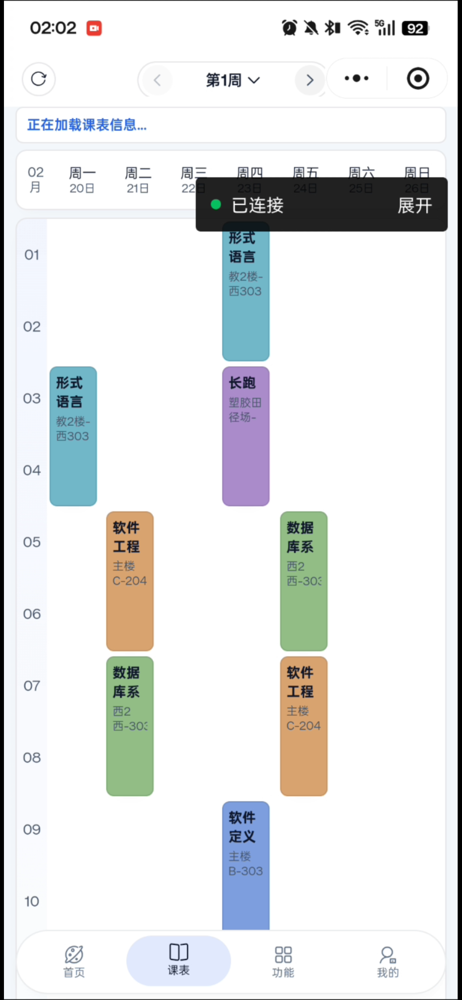
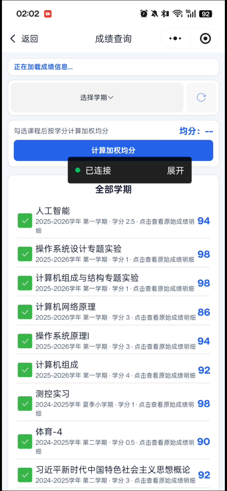
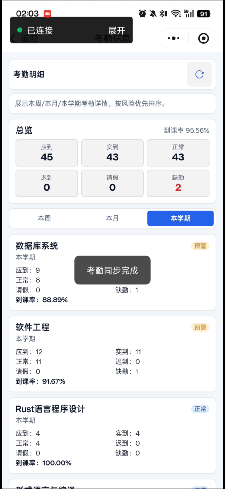
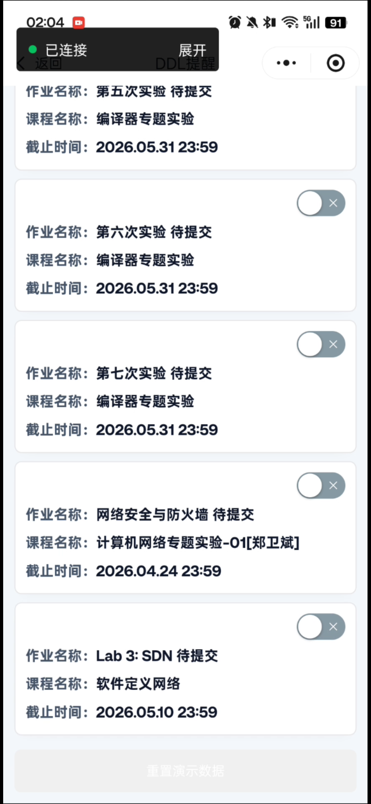
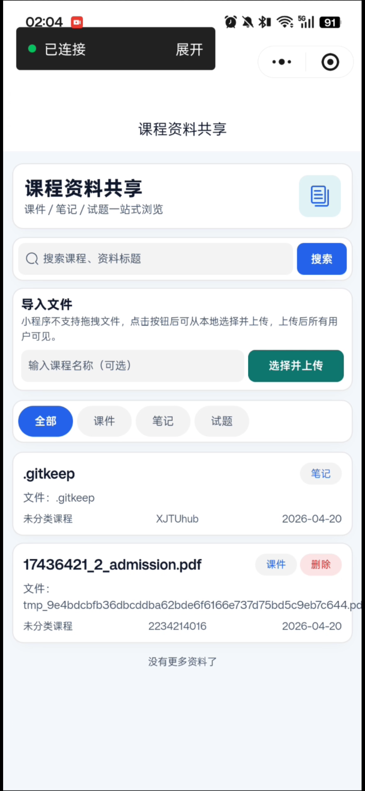
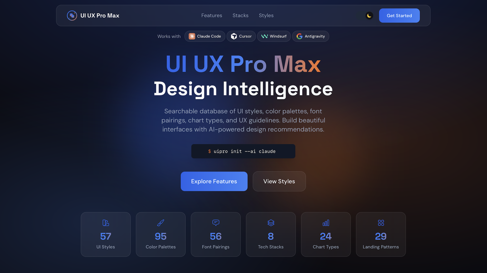
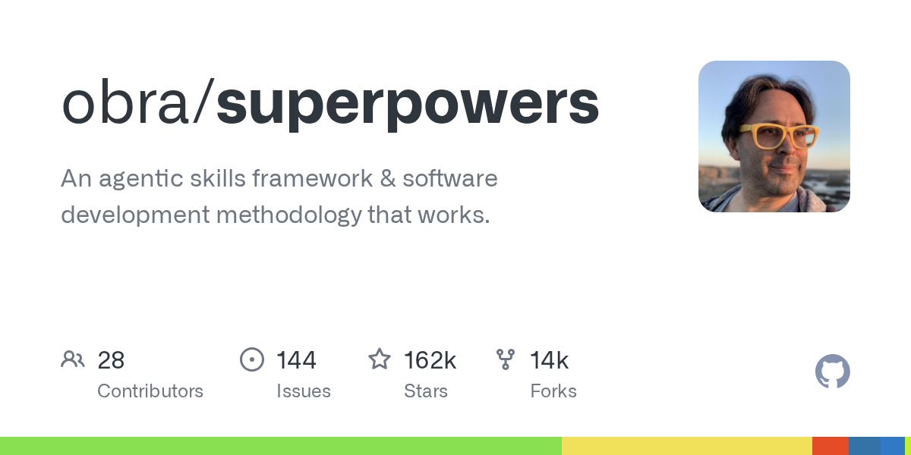

Score Query + Average Analysis
Students can view scores by term, open per-course details, and quickly estimate their current average performance.
A WeChat Mini Program + Node.js backend system for schedule, score, attendance, resource browsing, and DDL support.





XJTUhub is a campus learning assistant designed for Xi'an Jiaotong University students. The project contains two major parts: a WeChat mini-program frontend (XJTUhub-main) and a Node.js crawler-backed service (XJTU-API-main). The mini-program focuses on high-frequency student tasks (login, timetable, score, resources, attendance and DDL), while the backend focuses on stable data contracts and crawler-triggered synchronization from eHall-related systems.
Compared with a pure mock-data prototype, this project already includes a practical backend workflow: user login issues a local token, crawler tasks are triggered asynchronously, and mapped data is returned through unified API endpoints. At the same time, several modules preserve fallback data logic for robustness in network-unavailable or interface-unready cases.
We rewrote this part in a product-friendly way: what users can do now, and what we are preparing next. If you want technical detail, hover the info badge on each card.
Students can view scores by term, open per-course details, and quickly estimate their current average performance.
Attendance records are summarized course-by-course with warning tiers, so users can notice risky courses early.
Users can export timetable information and school-system todo items to reduce repeated manual checking.
Learning materials can be uploaded, searched, and reused across users, helping build a practical shared knowledge space.
Move local backend services to WeChat Cloud and prepare production-grade rollout.
Bind timetable classrooms to map APIs so students can navigate directly to class locations.
Support posts and matching for student collaboration and teacher-student research/competition opportunities.
This project is not “fully autonomous AI coding”. It is a vibe-coding workflow with continuous human review, requirement control, and end-to-end team verification. The final quality comes from human-AI collaboration, not one-shot prompting.
Responsible for project direction, baseline requirement research, AI skills investigation/deployment attempts, and final function-level test orchestration.
Built the full mini-program UI flow and interaction pages, combining practical UI development experience with AI-assisted design acceleration.
Implemented crawler orchestration, data mapping, and backend route support for course/score synchronization.
Designed and implemented resource data persistence and file-sharing support, enabling multi-user reuse of study materials.

Used as a design acceleration aid for layout style exploration and implementation iteration.

Used to structure planning, debugging, verification and delivery steps under human checkpoints.
Before assigning tasks to agents, the team performed requirement decomposition, technical stack comparison, and feasibility evaluation, then wrote detailed implementation instructions.
The project cost stayed below 100 RMB (below the expected 200 RMB), while every feature still passed team-wide review and testing before release.
wx.setStorageSync("account")) for quick relogin.--).xjtu-<stuId>-<timestamp>-<random>./login-init, /login-code, /login-verify for compatibility with mini-program routes.{ code, msg, data }./courses returns normalized course entries from crawler-mapped data./scores and /raw-scores return term-grouped score datasets..meta.json) and deterministic resource id generation./materials/* path.POST /loginGET /login-initGET /login-codePOST /login-verifyGET /coursesGET /scoresGET /raw-scoresGET /resourcesPOST /crawl/xjtu/triggerPOST /crawl/xjtu/course/triggerPOST /crawl/xjtu/score/triggerGET /crawl/xjtu/statusGET /attendance / GET /attendancesGET /ddl / PATCH /ddl/:idPOST /crawl/syxt/ddl/triggerPOST /crawl/xjtu/attendance/triggerTop-level structure:
XJTUhub-main/ — WeChat mini-program frontend (pages, custom tab bar, request utilities, UI assets).XJTU-API-main/ — Koa-based backend (routes/controllers/services/crawler scripts/resources).README.md — integrated project introduction.Frontend key implementation files:
pages/login/index.js, pages/login-verify/index.js — dual login paths + crawler trigger.pages/course/index.js — week navigation, calendar derivation, course detail modal.pages/score/index.js — term switch + raw detail join + cache strategy.pages/index/index.js — resource search/filter/pagination + timeout fallback.Backend key implementation files:
routes/index.js and routes/data.js — route surface and auth middleware.controllers/crawler.js — background crawling orchestration and status summaries.controllers/course.js, controllers/score.js — mapped data serving.controllers/resources.js — material file management, metadata, owner permissions.The current codebase already provides a complete mini-program + backend integration baseline for campus assistant scenarios, while keeping extension paths for real-time attendance/DDL and broader school-provider architecture.